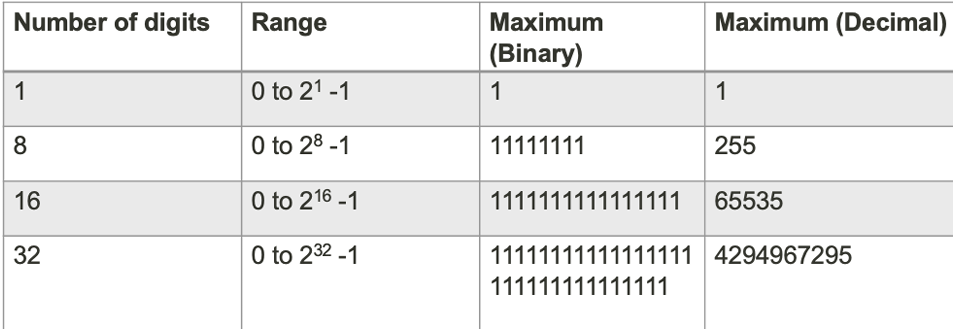

lecture 2.1
ALU Requirements
- High Reliability
- Error Free
- Simple Design
- Efficient Operation
- Large Data Range
- Economical Cost
Binary number system
Positional Notation
Range of numbers representable depends on:
- Number of symbols
- Number of digits

- More about binary and decimal numeral systems

Representing Negative Numbers
- Use a designated digit
- For example: designate the left most position
- 0111 (binary) represents -7 (decimal)
- 1111 (binary) represents 7 (decimal)
- Cost: an additional digit in every number
- For example: designate the left most position
How to convert decimal to binary
- exmaple:
100/2 = 50 ... 0
50/2 = 25 ... 0
25/2 = 12 ... 1
12/2 = 6 ... 0
6/2 = 3 ... 0
3/2 = 1 ... 1
1/2 = 0 ... 1
Count the remainder from bottom to top you will get the 1100100 binary number
- other bases is a same
Brief summary
Use 2-level digital representation
- Most error tolerant representation
Binary numeral system uses two symbols 0 and 1 and the positional notation to represent positive values
- A digit is a bit
- There are 8 bits in a byte
- An 8-bit binary number can represent 256 different values
- If the smallest value is 0, then the range is from 0 to 255